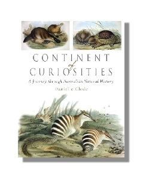

A Continent of Curiosities
Natural history essays inspired by the collections of the Museum Victoria.
In the backrooms of museums around Australia, millions of specimens lie waiting to be discovered – bones, fossils, skins, eggs, rocks, plants and artefacts. Each one has a story to tell, a place in the history of our continent.
From a passion for collecting curiosities, the sciences of natural history have emerged. And no continent provided more curiosities than Australia. Continent of Curiosities follows the thread of these stories from the collections of one of Australia’s oldest museums, Museum Victoria. Inspired by objects in the natural science collections, these essays weave a history of the development of biological science from an Australian perspective, with insights into the people and places that influence the way we see and understand the natural world around us.
These twelve wide-ranging and engaging essays reach across Indigenous knowledge to European science, from forests for water to forests of fire, reappearing possums and seashells, dinosaur brains and ape hands, and culminate in biogeographic lines in the sea, to shifting of continents and the possibility of life on Mars.
Published by Cambridge University Press
Available in hardback
Available from all good bookstores
Find your local bookstore Buy now in Aus/NZ
Praise for the book
‘beautifully produced’ —Mammalian Biology
‘wonderfully absorbing’ —Canberra Times
‘Clode's engaging writing style throughout the book will appeal to both the natural science enthusiast and a more general audience...a truly delightful and engaging journey' —ReCollections: A journal of museums and collections
‘fascinating collection…popular science writing of a high standard’ —Australian Book Review
‘Clode is a thoughtful and fluid writer, and can spin a good yarn’ —Historical Records of Australian Science